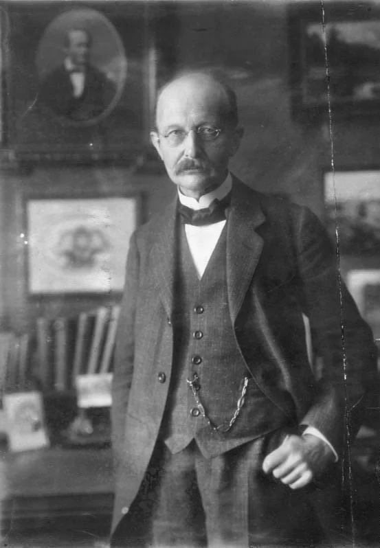
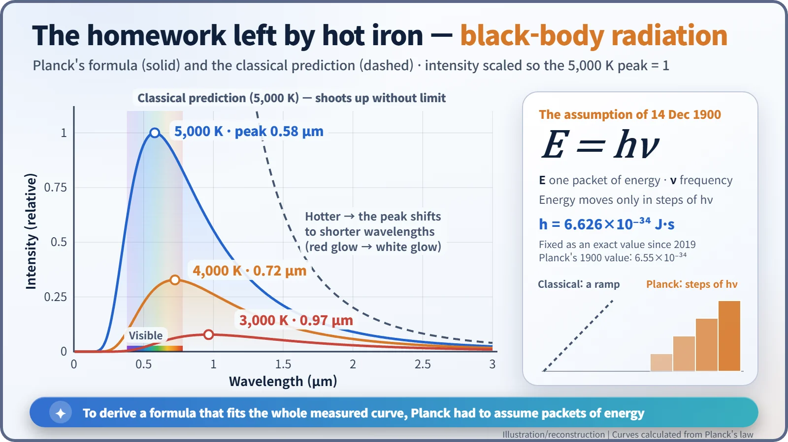
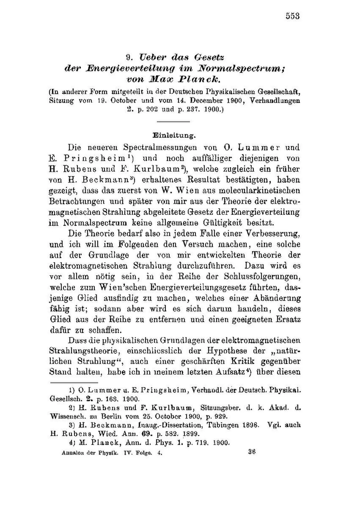
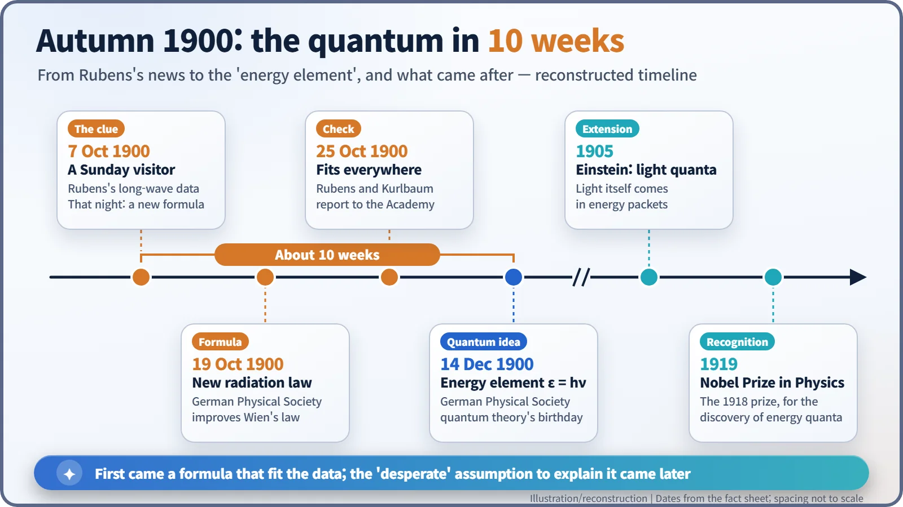

Nuclear History · 011
The Postcard After a Sunday Visit — Max Planck's Quantum Hypothesis (1900)
A formula that fitted the glow of hot bodies came first; the 'act of desperation' that explained it, energy in fixed packets, came ten weeks later.
On a Sunday in October 1900 an experimenter told Max Planck about new measurements of long-wavelength light, and that night Planck found a formula that fitted the glow of hot bodies at every wavelength. Ten weeks later, trying to explain why it worked, he assumed that energy is exchanged only in fixed packets, E = hν. He called it an act of desperation; physics now calls it the birth of quantum theory. [1]
A visitor with fresh data
On Sunday, 7 October 1900, the experimental physicist Heinrich Rubens (1865–1922) and his wife paid a visit to the Berlin home of the theoretical physicist Max Planck (1858–1947). Rubens could not resist talking shop. He had fresh measurements of very long-wavelength infrared light, around 51 micrometres, and they showed something simple: out there, the intensity of the radiation rose in direct proportion to temperature. [4]
After his guests left, Planck sat down and worked out a new formula. He wrote it on a postcard and mailed it to Rubens. Within ten weeks that postcard had led him to one of the strangest ideas in physics: that energy is handed out in fixed portions, not poured like water.

Why the colour of hot iron was an industrial question
Heat a poker in a fire and it glows dull red, then orange, then yellow, then nearly white. In late-nineteenth-century Germany, exactly how the colour and brightness of glowing bodies change with temperature was a practical matter. Electric lighting was spreading, and lamps needed to be compared against reliable standards. Much of that measuring happened at the Imperial Physical-Technical Institute (Physikalisch-Technische Reichsanstalt, PTR) in Berlin, approved in 1887 and built with land and money from the industrialist Werner von Siemens. [6]
The yardstick was an idealised object called a black body: something that absorbs all the light that falls on it. When heated, a black body glows with a spectrum that depends only on its temperature, not on what it is made of. In 1898 Otto Lummer and Ferdinand Kurlbaum at the PTR built a practical version, a platinum box blackened inside, with a small opening.
The trouble was theory. A formula published by Wilhelm Wien in 1896 matched the measurements at short wavelengths. By 1900, careful experiments showed it failing at long wavelengths. In June 1900 Lord Rayleigh in Britain proposed a formula that worked at long wavelengths, but not at short ones. Nobody had a formula that fitted the whole curve. [3]
A postcard, and "the hardest work of his life"
What Planck did on that Sunday night was a piece of mathematical tailoring: he stitched together the short-wavelength behaviour of Wien's law and the long-wavelength behaviour Rubens had described. On 19 October 1900, at a meeting of the German Physical Society, Kurlbaum reported the measurements and Planck presented his formula in a short talk, "On an Improvement of Wien's Spectral Equation." On 25 October Rubens and Kurlbaum told the Prussian Academy of Sciences that the new formula fitted their data remarkably well at all wavelengths. [1]

Planck was not satisfied. A formula that happens to fit is not an explanation, and he wanted to know why it worked. He later described the weeks that followed as the hardest work of his life. In the end he reached for a tool he had long resisted: Ludwig Boltzmann's statistical approach to entropy.
On Friday, 14 December 1900, back at the German Physical Society, Planck showed that his formula could be derived if one assumed that the imaginary "oscillators" that emit and absorb radiation exchange energy not continuously but only in whole-number multiples of a fixed amount. For an oscillator vibrating at frequency ν (the Greek letter nu), that amount is E = hν. The constant h is what we now call Planck's constant. The value he extracted from the measurements, 6.55 × 10⁻³⁴ joule-seconds, is within about 1.2% of today's value. This date is often called the birthday of quantum theory. [5]
A staircase instead of a ramp
Think of classical energy as a ramp: you can stand at any height. Under Planck's assumption it becomes a staircase: you can only go up or down a whole step at a time. The catch is that the steps are absurdly small. One packet of green light carries only about 4 × 10⁻¹⁹ joules, so in everyday life the staircase looks as smooth as a ramp.
You may have heard that classical physics predicted infinite energy at short wavelengths, the "ultraviolet catastrophe," and that Planck rescued it with quanta. That is mostly a story told in hindsight. The phrase was coined by Paul Ehrenfest in 1911, and the Planck of 1900 was not trying to fix that problem. He was trying to explain a measured curve. [3]

An "act of desperation" that opened a door
Planck himself did not think he had started a revolution. In a 1931 letter to the American physicist Robert W. Wood, he called his decision of 1900 an "act of desperation" ("Akt der Verzweiflung" in the German original). In the English translation usually quoted from his recollection, he wrote: "I considered the [quantum hypothesis] a purely formal assumption, and I did not give it much thought except for this: that I had obtained a positive result under any circumstances and at whatever cost." The historian Thomas Kuhn later argued that for several years Planck did not regard the discontinuity of energy as physically real. Historians still debate how far to take that reading. [3]
It was younger physicists who took the staircase seriously. In 1905 Albert Einstein proposed that light itself travels in packets of energy. In 1913 Niels Bohr built an atomic model in which an electron's energy comes in separate levels. The quantum mechanics that explains atoms and atomic nuclei, and with them nuclear energy, began in a laboratory measuring the glow of hot objects.

Planck received the Nobel Prize in Physics for 1918, awarded in 1919, "in recognition of the services he rendered to the advancement of Physics by his discovery of energy quanta." And since 20 May 2019 the International System of Units has fixed h at exactly 6.62607015 × 10⁻³⁴ joule-seconds and uses it to define the kilogram. A postcard written after a Sunday visit ended up, about 120 years later, underneath the world's standard of mass. [2] [5]
Timeline
| Date | Event |
|---|---|
| 1896 | Wilhelm Wien publishes his radiation formula |
| 7 Oct 1900 | Rubens visits Planck; Planck finds a new formula that night |
| 19 Oct 1900 | Planck presents the new radiation formula to the German Physical Society |
| 25 Oct 1900 | Rubens and Kurlbaum report that it fits at all wavelengths |
| 14 Dec 1900 | Planck introduces energy elements, E = hν |
| 1905 | Einstein proposes light quanta |
| 1919 | Planck receives the 1918 Nobel Prize in Physics |